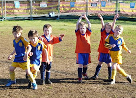
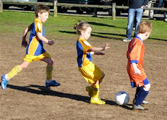
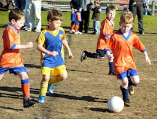
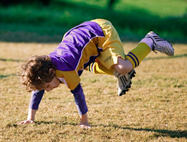
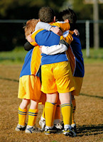
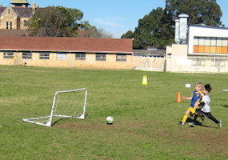
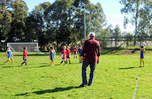
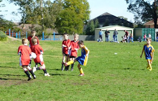
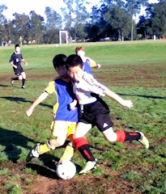

| Match Report - 30 July 2011 |
|
|
|
|
|
|
|
|
U6 Green
9 - 0
|
|


The 2011 season is in the final weeks and the U6 green have certainly got their
groove. The players are passing and positioning themselves very well. The kick
ins are faster and the tackling is strong. Sometimes the enthusiasm sees the
players attacking the ball amongst each other for possession.
The game was opened with a goal from Will and then followed up with a goal from

Christian. The goals kept coming, Will 1, Christian 2, Jasmine 1, Elijah 1 and
Blake 4. The team was so please to have Elijah back to make the Greens complete.
It is clear that Elijah has shown the children in Japan a few things about how
he plays soccer. The All Saints team made some great attacking runs down the
field, although the U6 greens defense was too strong, and the final score 9-0.
Thanks to all the families for the support from the sideline, the encouragement
keeps the children spirits high.
Well down to everyone and what a lovely way to celebrate with some goodies that
Elijah and his family kindly brought back from Japan for all the children and
siblings - THANK YOU.
The player of the week this week was awarded to William Oprey for improved
tackling.
- Sarah Robson
|
|
|
|
U6 Red A
1 - 4
|
|
The boys played a great defensive game for the first 10 minutes, Josh saving an
almost certain goal. Hayden came very close to scoring a goal, unfortunately the
ball stopped at the goal post. After saving another goal, unfortunately we scored
an own goal. Soon after this, another goal was scored against us.
The boys kept playing some great defensive soccer for the rest of the first half
except for a last second goal from our opposition. We managed to send the ball up
our end a few times in the second half, unfortunately unable to convert to goals
though. Later in the second half, All Saints scored an own goal too. Finally they
scored another goal against us, resulting in the end score of 4-1 against us.
- Craig Mewett
|
|
|
|
U6 White C
2 - 1
|
|


On a beautiful sunny morning we played against Hunters Hill and won 2-1.
It was a very close game and the boys held there own well and chased that ball
and did not give up, with pull backs here and there, passing and setting up
goals the boys were really showing off all their skills from training and a
few extra on how to celebrate scoring a goal!
Well done yet again! (Thanks Paul Bowen for the great photos!)
- Lisa Mach
|
|
|
|
U7 White C
4 - 3
|
|

The team had a win today against the Gladesville Sharks (4-3). This match was
definitely a game of 2 halves. The first half was a strong half for both teams,
trading goals and possession throughout the half. The outcome was 2-2, with
neither team gaining an upper hand during the half.
The second half was a complete reverse. North Ryde took the upper hand early,
spending most of the time in the Sharks half peppering the goal with shots.
The final score reflected a hard first half for North Ryde, with the second
half being a lot easier and a well deserved 4-3 win. Well done all!
Looking forward to next week!
- Michael Costello
|
|
|
|
U8 Brown
2 - 6
|
|


Saturday was a very exciting match. We approached the game with a few team
members unwell and hence no reserves (except a very dedicated Christian from
the U6 Green). The first half the U8 Brown were being dictated to by the
strength of the Putney team. With half time sitting at a 2 nil lead by Putney.
the North Ryde team were definitely determined to show their skills and there
was an excellent exhibition of passing, dribbling and kicking seen by several
players including Isaak, Sam, Luca and Declan.
Special mention to David for umpiring and coaching today. Brooklyn defended
the goal very well in the first half and was strong in attack in the second
half. Oliver made some good tackles and attacking moves as well as Christian,
who was ready in the wings for when the the team needed a short breather! The
second half our team seemed to come together, Jake took to the goals and our
attacking passing was accurate, which put the Putney team off, especially
their coach! The final score was 6-2 loss, although this did not represent
the skills exhibited bu the U8 brown team who showed good sportsmanship and
endurance. Well done.
Man of the match was awarded to Jake for an excellent effort in goals saving
several attempts on goals and making some very strong kicks down the field
- WELL DONE JAKE!
- Sarah Robson
|
|
|
|
U8 Yellow
3 - 3
|
|
An early start for both parents and players of North Ryde Under 8 yellow to get
out to Redfield College, Dural in time for an 08:30 kick off. The rugby,
basketball and soccer grounds, not to mention the buildings were absolute first
class. The soccer field, whilst very impressive, did take the players and many
parents of North Ryde by surprise. In particular, the goal was enormous. Every
other match played this season had a goal area defined by a semi circle, from
the centre between the goal posts with a radius of about 8 meters. The goal
area for this field was rectangular, with a width of some 10-12 metres that
stretched about 12 metres from the goal-line. In addition, the goal posts and
overhead bar looked almost full size. They were enormous.
The game was very entertaining and exciting, with both teams working hard to
ensure a win. North Ryde were sticking to a game plan that worked well for the
previous two games. Each player maintained position, enabling plenty of passing
and at least half a dozen opportunities to score. The Redfield attack was
relentless. These guys were playing for 'sheep stations' and in no way considered
defeat as an option. Come half time, Redfield are up by two goals, with North
Ryde yet to score.
Second half commences. North Ryde kick into gear and immediately step up the
pressure. Positions are held and defence is strong. A few minutes in and Fletcher
receives and absolute brilliant pass from Jacob who punches it past the goal
keeper into the back of the net. North Ryde had now bridged the gap, after
Redfield had scored an own goal for North Ryde. With renewed motivation and
the thought of a win North Ryde kept up the pressure, with a strategy that
appears to be working well. A few minutes Chris put North Ryde ahead. Twelve
minutes to go, the team is showing obvious signs of running out of energy, but
do keep up as much pressure as possible. 5 minutes remaining, Redfield hit back
with the equaliser, opening up the game again. Either side could win, but North
Ryde hold out for a draw.
Final score Redfield Football Club three (3), North Ryde three (3).
Goal Scorers:
1. Own Goal Redfield FC (1), 2 minutes into second half;
2. Fletcher Gusse (1), 5 minutes into second half;
3. Chris Watt (1), 12 minutes from full time.
Player of the Match - Jacob White
- David Watt
|
|
|
|
U9 Division 3
0 - 4
|
|

Round 11 was the replay of a previous washout and saw the boys take on the top
of the table Macquarie Dragons. The opposition was physically very big with some
of their team members towering over some of ours.
James and I tried to psyche the guys up as much as we could but perhaps the early
start was bit too much as we looked to be lacking some of the energy from previous
weeks. The boys certainly had the skills to match them though and were holding
their own. Unfortunately a wet and slippery ball managed to evade Nathan in goals
about 5 minutes in and then again a few minutes after that. Both were really lucky
goals that literally just slipped through. Putting us 2 nil down was not great but
the boys continued to play on and were starting to find some of their energy.
Macquarie did manage another goal 15 minutes in and it took us to half time with
3 - nil as the score.
We encouraged the guys at half time and I think that they did go into the second
half with some renewed energy. A couple of field changes as well and it saw the
boys playing a lot better and more reminiscent of the team from previous weeks.
Macquarie did managed to sneak in one more goal towards the end of game and we
were unlucky not to convert some opportunities that we had. The second half was
far more encouraging and it showed that we have the ability in the team to beat
Macquarie. We are up against them again this week so we'll find out I guess.
Final score was 4 - nil giving us only our third loss for the season but
unfortunately putting us back into 5th place with a hard battle to make the
finals. Certificate went to Nathan for some great saves in a hard position.
- Darren Mason (Manager)
|
|
|
|
U11 Division 1
6 - 1
|
|
'It all fell into place and they played some really nice football' was how Coach
David put it after the full-time whistle. And who could argue? There were some
lovely passing movements commencing from the back, through the midfield and on
to the strikers and goals were the result. This was a very dominant performance
and it needed to be given the way the top of the ladder looks at the moment.
Goals to Charlie in the second minute, Sam in the fourth and seventh minute,
Oscar P in the 16th minute and Eli in the twenty-third minute, all the direct
result of some wonderful passing and moving to space that Normanhurst didn’t
have an answer to, meant we took a healthy 5 goals to nil halftime lead.
Normanhurst obviously had some strict instructions from their coach at the break
and came out very physical in the second term. Eli scored again early in the
second half taking our lead to six before Normanhurst score a late long-range
consolation goal to make the final score six goals to one.
Full marks to all 13 boys who played on Saturday for a great wholehearted
performance. Let’s do it all again next Saturday and hope for a similar
excellent result!
- Tony Borg
|
|
|
|
U11 Division 3
1 - 3
|
|
Playing the top team in the competition was always going to be a huge challenge,
but we started off well. Pacific Hills had a few chances that went over the
crossbar, Adam stopped a couple and we had a couple of chances, but it was 0-0
at half time.
We started the second half full of energy and within minutes had made it to
their penalty box where Hamish managed to slot the ball past the goal keeper.
Unfortunately, this gave a scare to the Pacific Hills coach and players and
they soon scored an equaliser. Our boys came back again and the game seemed
evenly balanced.
Sam played well in midfield and Adam appeared to still be confident in goal.
A ball that bounced up and hit one of our player’s arms led to a penalty,
which they scored. We continued with enthusiasm, Matt, Ben and the rest of the
team playing well and Zac appearing everywhere. However, the Pacific Hills
midfield and defence had the game under control. We gave away a corner. The
ball travelled past several players from both teams and across the face of
the goal until it landed at the feet of one their players who booted it into
the back of the goal. It was a good, enthusiastic effort against a very
capable team.
- Martin Borri
|
|
|
|
U15 Division 2
0 - 1
|
|
For the thirteenth game of the year, with a clear day and an 11:00am start, the
boys played at North Ryde Oval against Epping Eastwood FC, who is currently 5th
in the GHFA competition. This is the team that beat us last year in the finals,
under 14’s.
We had a squad of 13 players with Manav injured and Nat away.
There was 3 moments that I will report for this game:
- Lewis was In Goals and one play took him out of goals to his left side, he scrambled for the ball but the attacker edged the ball out of his hand and then lobbed the ball into the front of the goal. Another Epping Eastwood player easily kicked it in. 0-1
Half Time, to this point of the game NRS had more attacks, possession and almost
all the goal shots but the score was 0-1. Paul advises the boys to keep trying,
maintain the intensity and to try and get behind the ball. Then:
- Tom made a great run beating everyone up to the keeper, paused then shot to the LHS of the keeper. A strong kick that bounced back from the side poll.
- Cameron in front of an empty goal puts his boot in and easily cleared the top bar.
- Final result 0-1
On reflection this game points out how difficult soccer can be and frustrating
for others to watch! You can have more possession and make more attempts at goals
and general out play the opposition but the score is what counts. For the
statistically minded: our team has never won a match when we have not scored or
only scored 1 goal in a game this season.
However, I think all the boys displayed the highest level of commitment and effort
during this game, well done!
Personally, we have won the last 3 games, plus a draw and with 4 games to go,
this was the game to lose to take the pressure off the team in trying to win the
4 remaining games.
I suspect next week’s game we will see a more relaxed team and a better scoring
result. I suggest we do not pressure the boys, let them have fun, and let’s see
what happens at each game.
We had 3 cup cakes to be awarded for players of the match.
- Vandana presented Harry and Lewis with a cup cake, well done Harry, Lewis – Mates since birth!
- Paul presented Luke with the 3rd cup cake, well done!
I would like to thank all the parents who came to support our team... you do make
a difference!
- Joe Rosenfels
|